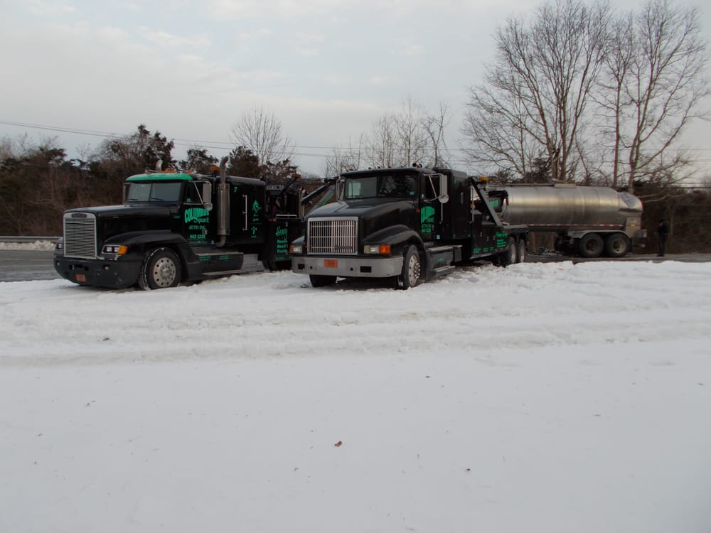
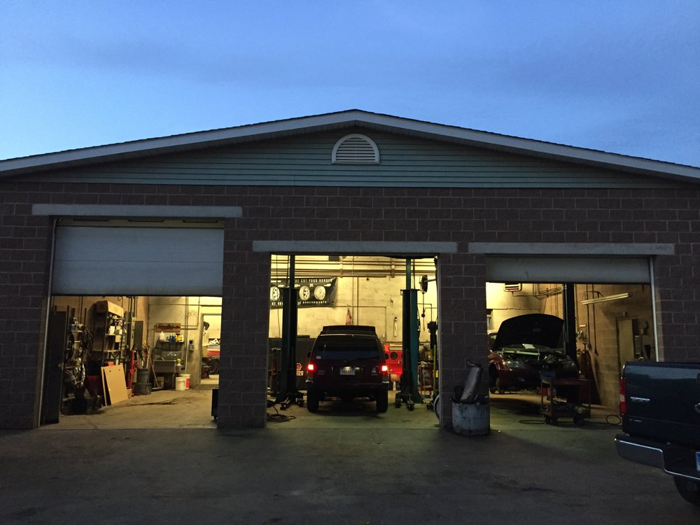
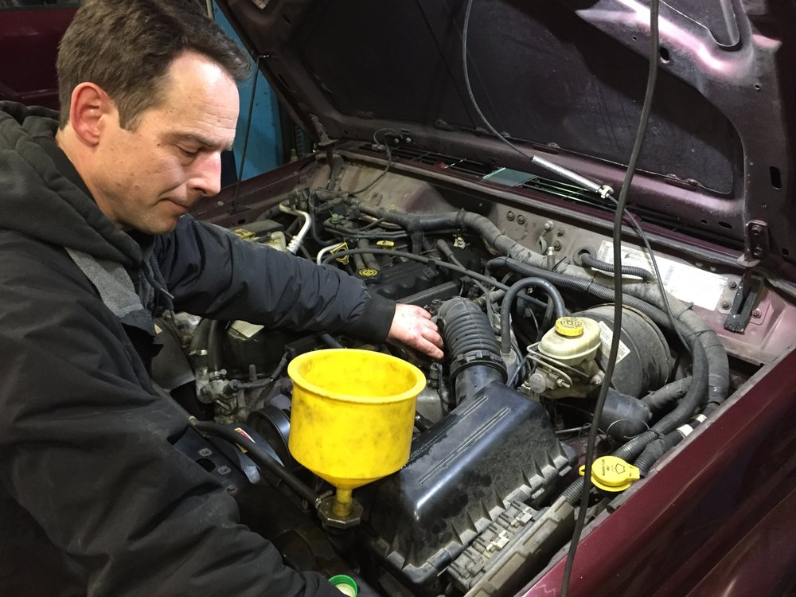
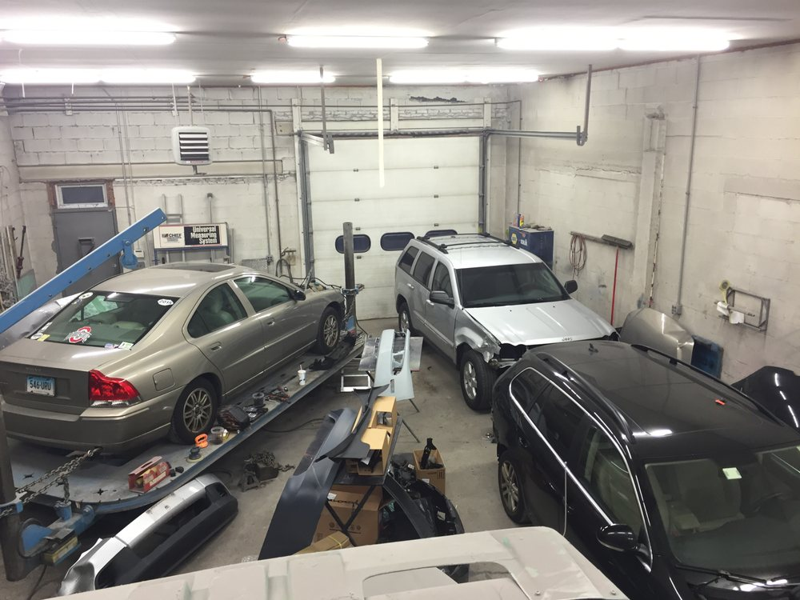

24/7 towing & roadside · New London, CT
Stuck? We're on the way, day or night.
Columbus Square Auto has towed, rescued and repaired vehicles from 61 Blinman Street in New London since 1993. Heavy-duty wreckers, roadside help and a full repair and body shop, open rain or shine and all holidays.
- Family owned since 1993
- 24 hours, 7 days, all holidays
- Heavy-duty wreckers
- BBB A+ rated
Services
Towing, roadside and repair under one roof
One call covers the tow, the diagnosis and the repair.
-
24/7 Towing & Wrecker Service
Light and heavy-duty towing and wrecker service around the clock, 365 days a year, including holidays.
-
Roadside Assistance
Winching, jump starts, lock-outs, gas delivery and other roadside help, wherever you're stopped.
-
Auto Repair
Full auto repair and service for all makes and models, with mechanics available and ready.
-
Auto Body Work
A full body shop for big and small repairs. Stop in for a free estimate.
-
Tires
Tires in stock for passenger vehicles and heavy-duty trucks.
-
Heavy-Duty Towing
Wreckers built for trucks and trailers, not just cars.
Our work
Our shop and our trucks
-

Three service bays at 61 Blinman Street -

Mechanics available and ready -

Full body shop for big and small repairs
About
A New London family business since 1993
Columbus Square Auto, Inc. is a family owned and operated garage and towing company that opened in 1993. From the shop on Blinman Street, the crew runs heavy-duty wreckers and roadside service 24 hours a day, 7 days a week, and handles general vehicle repair and auto body work during office hours.
The company is a federally registered motor carrier (USDOT 645102) and holds an A+ rating with the Better Business Bureau, with no complaints filed in the last three years.
- Founded
- 1993
- Shop
- 61 Blinman St, New London, CT 06320
- USDOT
- 645102
- Office hours
- Monday–Friday, 8am–5pm
- Towing & roadside
- 24 hours, 7 days a week
Reviews
What customers say
-
“Professional, courteous and timely on a flat tire when I needed a tow.”
-
“The jump start I needed happened flawlessly.”
-
“Very courteous, got my car to its destination with no issues at all.”
Read reviews on Yelp BBB A+ rated, 0 complaints in the last 3 years
Contact
Call us, or stop by
Columbus Square Auto, Inc.
61 Blinman St
New London, CT 06320
- Office
- Monday–Friday, 8am–5pm
- Towing & roadside
- 24/7, rain or shine and all holidays
Privacy
This site does not use cookies, analytics or advertising trackers. Information you enter in the contact form is used only to reply to your request and is never sold or shared. To have your details removed, call (860) 442-1236.